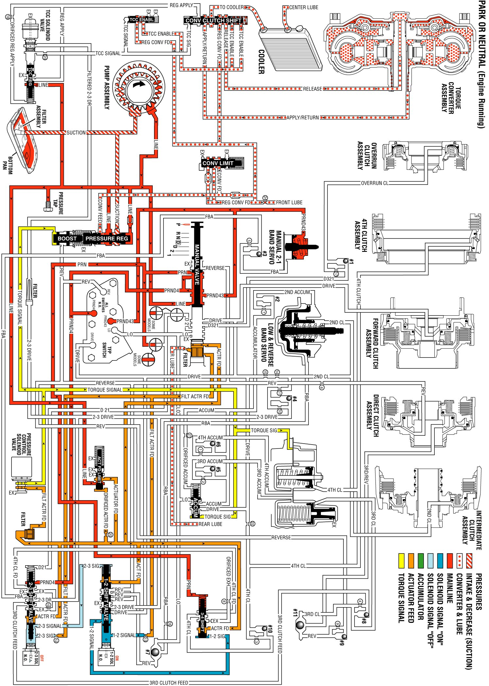

Park or Neutral - Engine Running
Park or Neutral - Engine Running
When you start the vehicle, the oil pump generates fluid flow from the transmission sump through the filter and into the pump. Filtered transmission fluid is directed to the pressure regulator valve.
Pressure Regulator Valve
The pressure regulator valve regulates line pressure according to various driving conditions. The converter feed pressure is directed to the torque converter hydraulic system. Regulated line pressure is directed to the torque converter clutch regulated apply valve, the actuator feed limit valve, and the manual valve.
Torque Converter Clutch Regulated Apply Valve (TCCRAV)
Line pressure is supplied to the TCCRAV to be utilized in other gear ranges.
Actuator Feed Limit Valve
This valve regulates the actuator feed pressure to the 1-2, 2-3, 3-4 shift valves, to the pressure control solenoid valve, and to the 1-2 and 2-3 shift solenoid valves.
Manual Valve
The line pressure from the pressure regulator valve is supplied to the manual valve in order to be utilized in other gear ranges. In Park range, line pressure is directed as PRND43, PRND4, and PRN fluid pressure.
Automatic Transmission Fluid Pressure (TFP) Manual Valve Position Switch Assembly
PRND4 and PRND43 fluid pressures from the manual valve are directed to their respective switches on the TFP manual valve position switch. This sends a signal to the PCM that the transmission is in Park range.
1-2 Shift Solenoid (1-2 SS) Valve
When the 1-2 SS valve is energized, 1-2 signal fluid pressure forces the 1-2 shift valve to the extreme left against a spring force.
2-3 Shift Solenoid (2-3 SS) Valve
When the 2-3 SS valve is de-energized, 2-3 signal fluid exhausts through the solenoid. A spring force holds the 2-3 shift valve to the extreme right.
1-2 Shift Valve
1-2 signal fluid pressure holds the 1-2 shift valve to the left against a spring force.
2-3 Shift Valve
Spring force holds the 2-3 shift valve to the extreme right. This action blocks the PRND4 fluid pressure at the 2-3 Shift Valve.
3-4 Shift Valve
Spring force and PRN fluid pressure hold the 3-4 shift valve to the extreme right.
Manual 2-1 Band Servo
PRND43 fluid pressure from the manual valve is directed to the manual 2-1 band servo. This pressure assists the spring force in holding the manual 2-1 band servo off.
Park or Neutral - Engine Running
